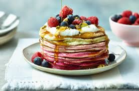

Pancakes

These blushing breakfast pancakes will leave you tickled pink on Shrove Tuesday with their
fun ombré colours. For a perfect pile, keep the pan hot, don't use too much oil and, if you can,
rest your batter for lighter, fluffier pancakes. Keen to add more flavour? Swap the milk for buttermilk or yogurt.
Ingredients
- 2 large eggs
- 200ml whole milk
- 2 tsp sunflower oil, plus 1 tbsp extra for frying
- 1 tbsp Greek-style yogurt
- 175g plain flour
- 1 tbsp baking powder
- 1 tsp bicarbonate of soda
- 2 tsp caster sugar
- 15g tube Dr. Oetker extra strong pink gel food colour
For the topping
- 150g Greek-style yogurt
- 80g blueberries
- 80g raspberries
- 40g pistachios, roughly chopped
- 4-6 tbsp maple syrup, to taste
- icing sugar, for dusting
Method
- Lightly whisk the eggs, milk, 2 tsp sunflower oil and yogurt in a mixing bowl.
Sift the flour into a separate large bowl and stir in the remaining dry ingredients.
Make a well in the centre and pour in the milk mix; whisk to combine.
- Divide the mixture between 4 bowls; you should have around 120g of mix in each bowl.
Mix 1 tsp pink colouring into the first bowl, ¼ tsp into the second and 1⁄8 tsp into the third.
Leave the fourth bowl plain.
- Heat a frying pan over a medium- low heat and brush with oil. Working one at a time, spoon 4 tbsp batter per pancake into the pan;
it will spread to be about 10cm wide (you will get 2 pancakes from each colour).
Cook for 1 min or until bubbles appear on the surface, then flip and cook for another 1 min or until lightly browned and cooked through.
Transfer to a plate and cover with foil to keep warm while you cook the remaining pancakes.
- Stack the pancakes onto a serving plate, with the darkest shade at the bottom and the plain pancakes at the top.
Top with 2-3 tbsp yogurt, 20g each blueberries and raspberries, 10g pistachios and 2 tbsp maple syrup, then dust with icing sugar.
Serve with the remaining toppings on the side.
TIP: Use orange or blue food colouring to make these VEGETARIAN .